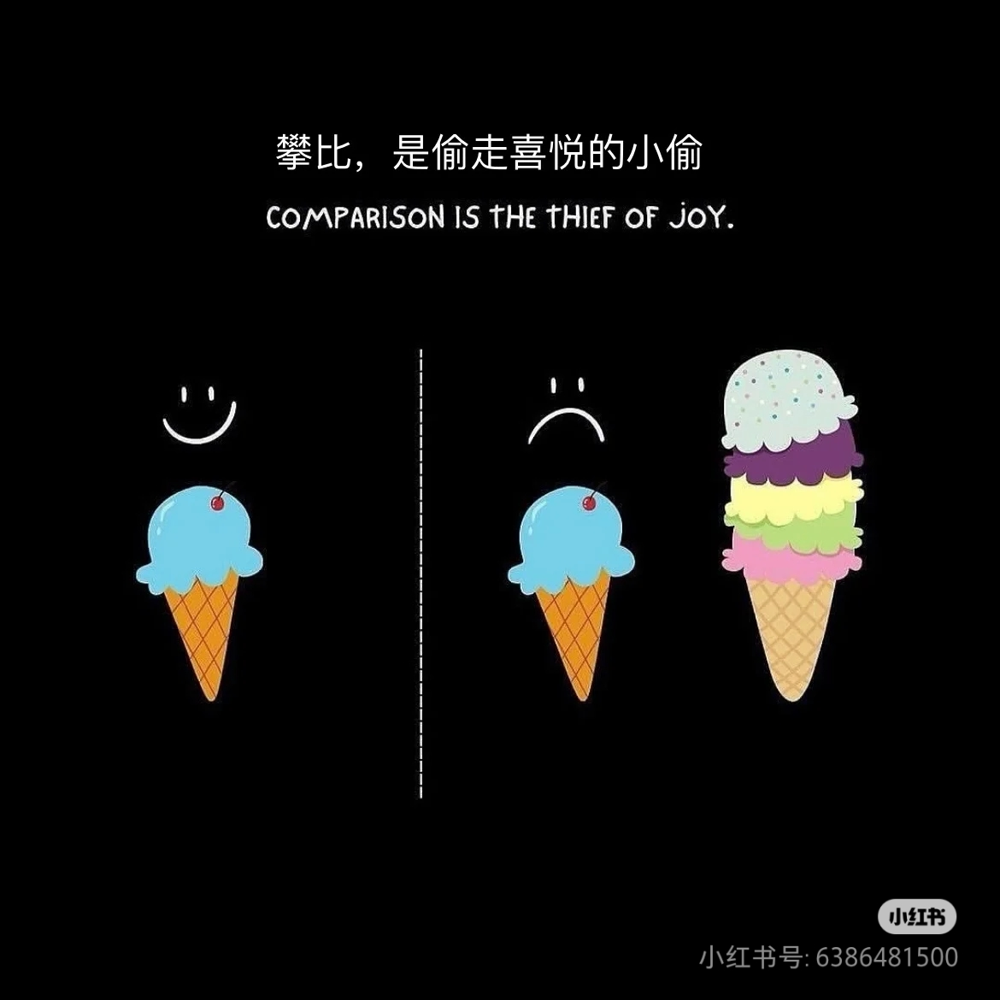

BUAA-OSLab6实验总结
时隔一学期再一次说出那句 “ Hello MOS ! ”，百感交集涌上心头...
欲买桂花同载酒
终不似 少年游
零 前言
期末周了，还在忙一些七零八乱的事情，感觉6系的烤漆独具特色，没有尽心尽力去备考，反而有OO博客作业、OS挑战性任务、ML大作业甚至在训模型。笔者写这段前言的时候已是晚上十点多，昨晚没睡好头痛了一天，谁家好人深度睡眠40分钟啊😭但是总归把这头痛的一天熬过去了，可能是因为有🐝双排学习的缘故吧，今天还是很可喜可贺的！
事不宜迟，最后的Lab6实验总结快快端上来罢！
一 思考题
Thinking 6.1
示例代码中，父进程操作管道的写端，子进程操作管道的读端。如果现在想 让父进程作为“读者”，代码应当如何修改？
1 |
|
Thinking 6.2
上面这种不同步修改 pp_ref 而导致的进程竞争问题在 user/lib/fd.c 中 的 dup 函数中也存在。请结合代码模仿上述情景，分析一下我们的 dup 函数中为什么会出 现预想之外的情况？
此前的 dup 函数代码复制如下：
1 | int dup(int oldfdnum, int newfdnum) { |
如果先映射数据部分，再映射文件描述符，如果在映射完文件描述符后，进程恰好被中断，那么另一程序会错误的认为文件映射已经完成，从而导致错误的产生。
Thinking 6.3
阅读上述材料并思考：为什么系统调用一定是原子操作呢？如果你觉得不是 所有的系统调用都是原子操作，请给出反例。希望能结合相关代码进行分析说明。
1 | .macro CLI |
由我们之前在系统调用章节的代码可知，我们将屏蔽中断位设为了1，这意味着任何系统调用不会被中断了，也就变成了原子操作。
Thinking 6.4
仔细阅读上面这段话，并思考下列问题
• 按照上述说法控制 pipe_close 中 fd 和 pipe unmap 的顺序，是否可以解决上述场景的进程竞争问题？给出你的分析过程。
• 我们只分析了 close 时的情形，在 fd.c 中有一个 dup 函数，用于复制文件描述符。试想，如果要复制的文件描述符指向一个管道，那么是否会出现与 close 类似的问题？请模仿上述材料写写你的理解。
与之同理，可以解决。关键在于遵循“先私有，后共享”的原则，即先unmap文件描述符（fd），再unmap共享的管道数据区（pipe）。若先unmap私有的fd，
pageref(fd)会先减小。即使此时发生切换，另一端进程会发现pageref(fd) < pageref(pipe)，判断依然正确。当close操作最终完成，pageref(pipe)也随之减小后，系统状态才恢复到新的平衡，此时的判断才是最终正确的。与上述对应的：close和dup是镜像操作，分别对引用进行了减少与增加。为了保证并发安全，close应遵循“先私有后共享”的顺序解除映射，而dup则应遵循“先共享后私有”的顺序建立映射。这两种策略共同保证了在操作的任何中间步骤，系统核心不变量都不会误导其他进程的判断。若先map共享的pipe，pageref(p)会先增加。这确保了在dup操作的中间状态，pageref(p)的值总是“领先”于pageref(fd)的变化。当dup最终完成，pageref(fd)也增加后，系统才恢复到新的平衡状态（例如pageref(rfd) + pageref(wfd) = 1 + 2 = 3）。
Thinking 6.5
思考以下三个问题。 • 认真回看 Lab5 文件系统相关代码，弄清打开文件的过程。 • 回顾 Lab1 与 Lab3，思考如何读取并加载 ELF 文件。 • 在 Lab1 中我们介绍了 data text bss 段及它们的含义，data 段存放初始化过的全 局变量，bss 段存放未初始化的全局变量。关于 memsize 和 filesize ，我们在 Note 1.3.4中也解释了它们的含义与特点。关于 Note 1.3.4，注意其中关于“bss 段并不在文 件中占数据”表述的含义。回顾 Lab3 并思考：elf_load_seg() 和 load_icode_mapper() 函数是如何确保加载 ELF 文件时，bss 段数据被正确加载进虚拟内存空间。bss 段 在 ELF 中并不占空间，但 ELF 加载进内存后，bss 段的数据占据了空间，并且初始 值都是 0。请回顾 elf_load_seg() 和 load_icode_mapper() 的实现，思考这一点 是如何实现的？
user/lib/files.c文件中的open在最顶层被用户调用，这个函数又调用fsipc系列函数，向文件系统进程发送请求，并等待返回接受的消息，文件系统进程的serve函数调用file_open完成文件的打开操作，并返回返回值。ELF文件中的段信息是通过
Elf32_Phdr结构体数组来描述的，其中包含了各个段的类型、在文件中的偏移、在内存中的虚拟地址、大小等信息。对于 bss 段，虽然它在文件中不占据实际存储空间，但它在内存中有一个预期的大小，是通过简单维护地址空间中开始和结束的地址实现的，用于存放未初始化的全局变量和静态变量，这些变量默认值为0。bss段的正确加载不是由加载器单方面完成的。而是
elf_load_seg负责根据 p_memsz 分配足够大的内存空间，而底层的内存分配器page_alloc保证了所有新分配的页面内容都是0。正是这种职责分离和协同，高效地实现了bss段的加载。
Thinking 6.6
通过阅读代码空白段的注释我们知道，将标准输入或输出定向到文件，需要 我们将其 dup 到 0 或 1 号文件描述符（fd）。那么问题来了：在哪步，0 和 1 被“安排”为 标准输入和标准输出？请分析代码执行流程，给出答案。
在user/init.c的角落里，代码是这样写的：
1 | // stdin should be 0, because no file descriptors are open yet |
Thinking 6.7
在 shell 中执行的命令分为内置命令和外部命令。在执行内置命令时 shell 不 需要 fork 一个子 shell，如 Linux 系统中的 cd 命令。在执行外部命令时 shell 需要 fork 一个子 shell，然后子 shell 去执行这条命令。 据此判断，在 MOS 中我们用到的 shell 命令是内置命令还是外部命令？请思考为什么 Linux 的 cd 命令是内部命令而不是外部命令？
- MOS 每次执行命令时都会通过
fork创建一个子进程，因此是外部命令。 - Linux 中的
cd命令设计为内部命令，原因主要是：cd命令需要修改 Shell 进程自身的环境或状态，如果它是一个外部指令，那修改的也只是子进程的环境与状态，一旦退出子进程便如同未曾修改一般。这是一个与 shell 会话状态紧密相关的操作。作为内部命令，它可以确保改变立即生效并影响后续命令的执行环境。
Thinking 6.8
在你的 shell 中输入命令 ls.b | cat.b > motd。
• 请问你可以在你的 shell 中观察到几次 spawn ？分别对应哪个进程？
• 请问你可以在你的 shell 中观察到几次进程销毁？分别对应哪个进程？
2 次 spawn：一次 spawn 启动
ls.b，另一次启动cat.b，对应其执行二者的进程。4次进程销毁。 对应关系大致如下进程关系图所示：
1 | P_main_shell (你的交互式Shell, 一直在运行) |
二 难点分析
Lab6实验重点主要有管道通信和Shell的实现。在这里我们遇到了许多和内核相似的操作，但是已经全然在用户态的平台之上了，可以说是对前面所有所学的内容的综合运用。难点主要是Shell的原理解读以及spawn等函数的构建，需要我们从理论和代码双层面立体地了解我们最后要构建的Shell实现。
三 实验感受
本次Lab6实验一没有上机，二内容较短，让笔者比较轻松应对期末吧也许（，虽然不用上机，但是还是认真完成了课下和相应的思考，为后面的Shell挑战性任务做好基础准备。Lab6感觉像是整个MOS的顶盖，让我们一学期学的内容最终归结于一个现实的应用，体感还是很好的！一个学期收获满满，但是OS还是不要再学一遍了~
四 后记
OS的时光相比一生也是短暂的吧，未来应该没有机会如此系统地学习这门课了，但是话说考研还是要学的😄。最后的最后了，只剩挑战性任务我们就要和OS说再见了，剩下的只有一本电子指导书，以及即将完结的代码迭代——不知道跳板机是否还会为我们而开。一年半载学得不尽人意，自愧难当却也无怨无悔，每个人都有自己攥住的东西，既然不是它，那就不必是它，花开堪折直须折，倒也不必盯着别人或者众人手里的花了。
一苇以航的人生，不关注得到，本身就是一种失去。
言尽于此，跟笔者一起伸个懒腰小憩一下吧😪

If you like this blog or find it useful for you, you are welcome to comment on it. You are also welcome to share this blog, so that more people can participate in it. If the images used in the blog infringe your copyright, please contact the author to delete them. Thank you !